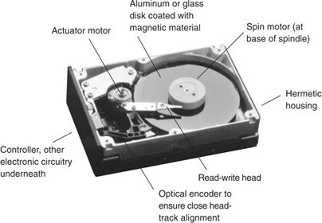

Disk drives write and read information that computers use. They comprise read-write heads mounted at the end of an arm that swings over the surface of a rotating disk in much the same way that a phonograph needle and arm reach over a record; aluminum or glass disks coated with magnetic material; at least two electric motors, a spin motor that drives the rotation of the disks and an actuator motor that moves the head to the desired position over the disk; and a variety of electronic circuits that control the drive’s operation and its interface with the computer. See Figure 1.1 for an illustration of a typical disk drive.
The read-write head is a tiny electromagnet whose polarity changes whenever the direction of the electrical current running through it changes. Because opposite magnetic poles attract, when the polarity of the head becomes positive, the polarity of the area on the disk beneath the head switches to negative, and vice versa. By rapidly changing the direction of current flowing through the head’s electromagnet as the disk spins beneath the head, a sequence of positively and negatively oriented magnetic domains are created in concentric tracks on the disk’s surface. Disk drives can use the positive and negative domains on the disk as a binary numeric system—1 and 0—to “write” information onto disks. Drives read information from disks in essentially the opposite process: Changes in the magnetic flux fields on the disk surface induce changes in the micro current flowing through the head.
Figure 1.1 Primary Components of a Typical Disk Drive
